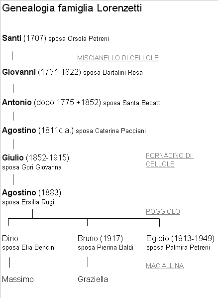

Ai primi del 1935, dopo gli opportuni lavori di restauro e modifiche interne al podere di Maciallina di proprietà Vegni, vi fanno entratura due famiglie di mezzadri: i Lorenzetti e i Sanleolini. I figli di Agostino Lorenzetti, defunto da poco, e della fu Ersilia Rugi compongono un piccolo nucleo familiare di sette persone comandate dal capoccio Egidio, nato al Poggiolo l'11 gennaio 1913. Egli, alcuni anni dopo, nell'aprile 1938 sposerà a Rencine Palmira Petreni e avrà Remo il 23 dicembre 1939. Degli altri fratelli e sorelle Amelia (1 luglio 1915) si accaserà presso i Pianigiani della Cornacchia sposando Armando il 10 gennaio 1942, Bruno (1917) prende in moglie Pierina del Baldi di Monastero il 6 ottobre del 1945, Brunetta (1919) non è registrata a Quercegrossa vivendo tra S. Gimignano e Volterra, Nella (1922) prenderà per marito Dino Finetti nella vicina Macialla il 22 settembre 1945 e infine il minore dei fratelli Dino si sposerà con Elia dei Bencini di Passeggeri qualche anno più tardi. A seguito di questi felici eventi la famiglia assume un assetto stabile che perdurerà nel tempo e nel 1946 sono sei i Lorenzetti di Maciallina e tutti adulti in età di lavoro compreso il 15enne Dino. Quando entrarono a Maciallina provenivano da S. Dalmazio dove erano rimasti pochi anni perché vi si erano trasferiti il 3 marzo 1930 provenienti dal podere Palazzetto del Poggiolo dove i Lorenzetti dimoravano da alcuni decenni, forse dalla fine dell'Ottocento o i primi del secolo successivo risalendo il primo dato certo al 1911.

Miscianello
Ma la più antica storia dei Lorenzetti fu vissuta nella parrocchia di Cellole a Pontignano dove li troviamo nel 1767 contadini a Miscianello. Santi (1707 ca.) è il capofamiglia 60enne e vive con la moglie Maria Orsola, il figlio Giovanni di 13 e le figlie Caterina, Lucia, Maria e Marianna di età tra i 18 e i 28 anni. Ha con sé anche due fratelli 50enni: Antonio e Francesco. Tutti attendono al podere e le donne
“filano”: sono nove persone. Da poco devono essere a Miscianello in quanto non esistono registrazioni più antiche né legami con le vecchie e numerose famiglie Lorenzetti del senese.
Cinquant'anni dopo li troviamo nel 1821 sempre a Miscianello, podere Scopeto, proprietà della Nobile Signora Cunegonda Marzocchi erede Sozzini.
Una bella famiglia di diciotto persone dove il capoccio Giovanni del fu Santi, vedovo di Rosa Bartalini, è padre di Santi, ammogliato con Barbera Cicali che gli ha già sfornato otto figli; a questi si aggiungono alcuni zii. Uno dei figli di Santi è Antonio, l'avo diretto, nato nel 1786 ed ora di 35 anni, come la coetanea moglie Santa Becatti e sono già nati Agostino e Giovacchino di 7 e 5 anni. Allo scadere degli anni Trenta dell’Ottocento si assiste ad un vero boom demografico a seguito del matrimonio di uno dei fratelli di Santi, Giuseppe, con Maria Rosa Brogi che gli partorisce subito quattro figlioli in cinque anni portando così il totale dei Lorenzetti a ventuno. Il quadro degli anni successivi deve essere stato preoccupante con Giuseppe che arriverà ad avere otto figlioli, il nipote Pietro di Santi che si ammoglierà e inizierà anche lui la produzione di figli insieme ad Agostino di Antonio che sposa Caterina Pacciani il 29 novembre 1845, della stessa parrocchia. A conti fatti nel 1850 i Lorenzetti del podere Scopeti di Miscianello sono ventisette intorno alla tavola.
Fornacino
Per questo Antonio, vicino ai settanta, e suo figlio Agostino decidono di separarsi e tornare al Fornacino del Sig. Masotti come logaioli. Mentre questo sarà il ramo da seguire per arrivare ai Lorenzetti di Maciallina, lasciamo l’altro a Miscianello, forte ancora di ventitre persone ma con il vecchio Santi, la moglie e un fratello che moriranno entro uno o due anni. Da evidenziare che di Santi sono in casa sei figli maschi e una sola femmina mentre di Giuseppe un solo maschio, Angiolo, e ben sette femmine dai 10 ai 28 anni con un repertorio di nomi tra i più comuni di allora: Carolina, Caterina, Assunta, Maria, Faustina, Annunziata e Santa, l'ultima di 10 anni.
Al Fornacino, intanto, nasce Giulio il 14 gennaio 1852, ma da questa data, non possedendo ulteriori notizie saltiamo al 1882 dove rintracciamo registrato il matrimonio dello stesso Giulio, sempre nella casa del Fornacino, con Giovanna Gori e in conseguenza si assiste alla nascita del nuovo Agostino il 14 gennaio 1883 e della sorella Maria il 31 luglio del 1885. Fra le due nascite, intorno al 1883 muore la nonna vedova Caterina Pacciani di 60 anni.
Poggiolo
Siamo giunti alla vigilia dell’arrivo al Poggiolo e il 12 giugno 1907 proveniente da Monticiano (?) è iscritto al podere Palazzetto del Poggiolo il colono Giulio Lorenzetti del fu Agostino con una famiglia composta da due uomini e sei donne. Successivamente, nel 1911, al Palazzetto di proprietà Bandini abita la famiglia di Giulio composta dalla moglie, tre figlie, Quirina (1893), Giulia (1896), Agostina (20 marzo 1900) e Agostino di 28 anni che si appresta a prendere in moglie Ersilia Rugi. La storia riprende con la generazione successiva formata dai figli di Agostino che ridaranno vita ad una famiglia in forte calo numerico per la partenza delle tre sorelle e dall'11 dicembre del 1915 anche dell'anziano genitore Giulio, morto all'ospedale di paralisi e sepolto a Siena. La vedova Giovanna Gori metterà fine ai suoi giorni al Palazzetto, alle ore 14 dell'8 dicembre 1922 all'età di 61 anni, munita dei conforti religiosi dal parroco don Alessandro Muzzi. I passi negli anni seguenti li conosciamo e riprendiamo dal 1948 quando dal matrimonio di Bruno e Piera nasce Graziella a cui segue imprevisto e improvviso il lutto per la morte di Egidio avvenuta il 9 febbraio 1949 in età di 36 anni. La vedova Palmira Petreni si trasferirà a Pietrafitta. Negli anni seguenti che vedono la tribolazione del mondo agricolo anche Dino, maturata l'età per la famiglia, si sposa il 24 settembre del 1959 a Quercegrossa con Elia dei Bencini di Passeggeri. Ma ormai non c'è più futuro nei campi e con la vendita di Maciallina al Granelli nel 1962/63 finisce il rapporto di mezzadria. Dino, qualche tempo dopo, si trasferisce a Quercegrossa nelle case di Calagna sopra i nuovi macelli, già camionista dal Niccolai, mentre Bruno, rimasto operaio col nuovo proprietario per un paio di anni, viene poi spostato negli appartamenti sulla strada vicino al vecchio podere e vi resterà fino al matrimonio della figlia Graziella. Massimo, l'unico figlio di Dino ed Elia, nascerà a Quercegrossa.
LORENZETTI ANGIOLO (1927-1935); mezzadri; Gaggiola;
da Pieve di Castello (Monteriggioni).
Nell’aprile del 1927 la famiglia di Angiolo Lorenzetti fa la sua entratura a Gaggiola proveniente dalla Pieve a Castello di Monteriggioni. Angiolo è il capoccio e padre di Agostino, Giulia, Bruno e Virgilia che ha avuto dalla moglie Sestilia Granai. Reca con sé anche due nipoti, forse orfani, Gino e Goliardo. Negli otto anni di presenza a Quercegrossa si registrano due avvenimenti anagrafici: il matrimonio di Bruno con Dina Finetti, la figlia di Carlo di Macialla, con cerimonia del 1 dicembre 1928 nella chiesa di Quercegrossa, e la seguente nascita del loro figlio Alvaro, battezzato a Basciano nel novembre 1930. Dopodichè non c’è altro fino alla loro partenza per destinazione sconosciuta ai primi del 1935 quando lasciarono il podere ai Sestini.
Inizio pagina
Indice famiglie del '900
Indice dei Capitoli